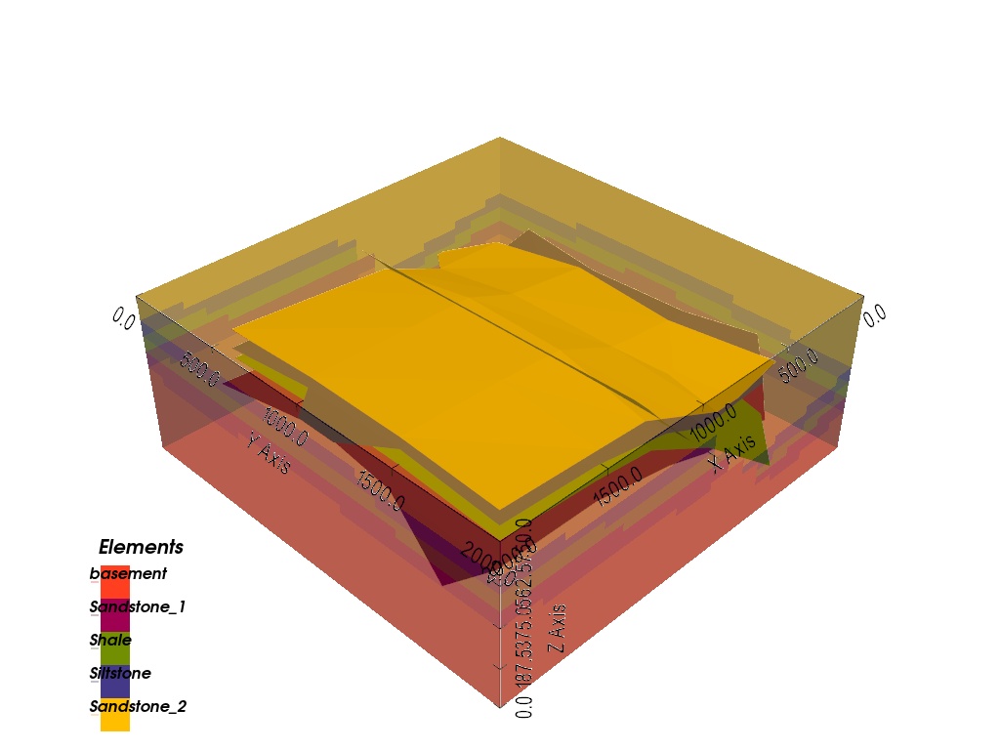
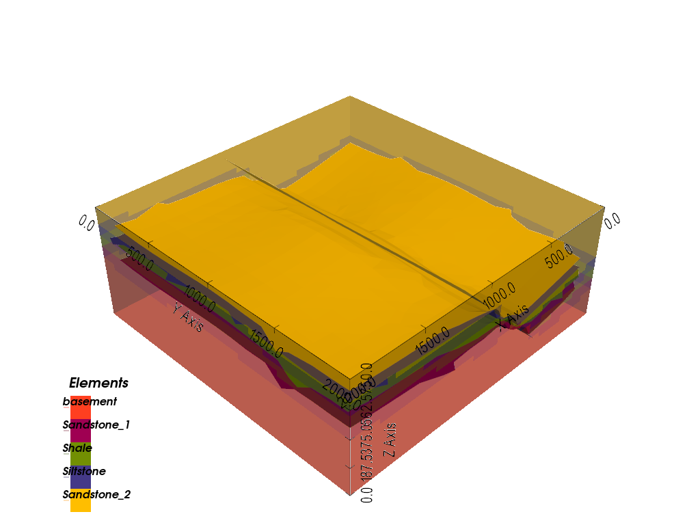
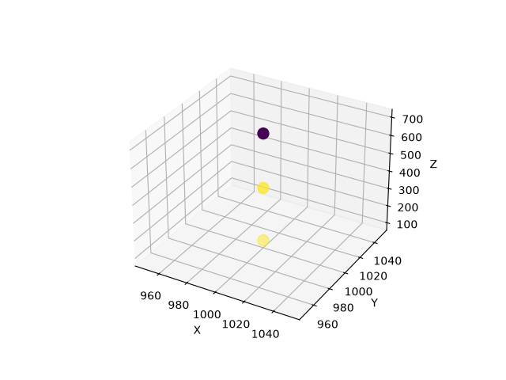
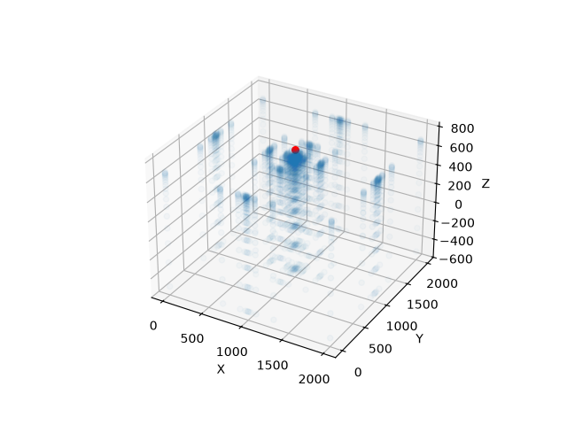

Note
Go to the end to download the full example code.
Grids: Regular, Octree, and Custom¶
Why grids exist, and gempy’s different grid types
gempy solves for lithology and structure by interpolating an implicit potential-field function – but that function can only ever be evaluated at a finite set of points, not truly continuously across space. That finite set of 3D query points is what gempy calls a “grid”. This tutorial explains why several different grid types exist side by side – a fixed-resolution volume, an adaptively refined version of the same volume, arbitrary custom points, and a few special-purpose ones – and how to use each.
sphinx_gallery_thumbnail_number = 4
import numpy as np
import matplotlib.pyplot as plt
import gempy as gp
import gempy_viewer as gpv
np.random.seed(1234)
Model setup¶
The model below is the same simple fault model used throughout these tutorials. This section demonstrates several different grid configurations, so building it is wrapped in a small helper to avoid repeating the same setup for each one:
data_path = 'https://raw.githubusercontent.com/cgre-aachen/gempy_data/master/'
def build_model(project_name, resolution, refinement):
"""Build the simple fault model with a given resolution/refinement, so the
difference between grid configurations further down is the only thing that varies.
"""
geo_model = gp.create_geomodel(
project_name=project_name,
extent=[0, 2000, 0, 2000, 0, 750],
resolution=resolution,
refinement=refinement,
importer_helper=gp.data.ImporterHelper(
path_to_orientations=data_path + "/data/input_data/getting_started/simple_fault_model_orientations.csv",
path_to_surface_points=data_path + "/data/input_data/getting_started/simple_fault_model_points.csv",
hash_surface_points="4cdd54cd510cf345a583610585f2206a2936a05faaae05595b61febfc0191563",
hash_orientations="7ba1de060fc8df668d411d0207a326bc94a6cdca9f5fe2ed511fd4db6b3f3526"
)
)
gp.map_stack_to_surfaces(
gempy_model=geo_model,
mapping_object={
"Fault_Series": 'Main_Fault',
"Strat_Series": ('Sandstone_2', 'Siltstone', 'Shale', 'Sandstone_1')
}
)
gp.set_is_fault(geo_model, ["Fault_Series"])
return geo_model
geo_model = build_model('grids_dense', resolution=[20, 20, 20], refinement=4)
gp.compute_model(geo_model)
Surface points hash: 4cdd54cd510cf345a583610585f2206a2936a05faaae05595b61febfc0191563
Orientations hash: 7ba1de060fc8df668d411d0207a326bc94a6cdca9f5fe2ed511fd4db6b3f3526
Setting Backend To: AvailableBackends.PYTORCH
GPU enabled. Using device: cuda
GPU device count: 1
Current GPU device: 0
Regular grid vs. octree grid¶
geo_model.grid is a container of several grid types at once, each contributing its
own points to the coordinates that actually get interpolated. Which ones are
currently contributing is shown by active_grids:
geo_model.grid.active_grids
<GridTypes.DENSE|NONE: 1026>
Passing an explicit resolution=[nx, ny, nz] to create_geomodel, as above, gives
you the regular grid: a literal, fixed voxel grid spanning the model’s extent at
exactly that resolution. geo_model.grid.regular_grid is this dense grid, and the
lithology block returned by compute_model matches its shape exactly:
geo_model.grid.regular_grid.resolution
array([20, 20, 20])
geo_model.solutions.raw_arrays.lith_block.shape
(8000,)
Leaving resolution=None instead gives you the octree grid – an adaptively
refined grid that concentrates resolution near surface contacts rather than spreading
it evenly, controlled by refinement (the number of octree levels) instead of an
explicit resolution:
geo_model_octree = build_model('grids_octree', resolution=None, refinement=4)
geo_model_octree.grid.active_grids
Surface points hash: 4cdd54cd510cf345a583610585f2206a2936a05faaae05595b61febfc0191563
Orientations hash: 7ba1de060fc8df668d411d0207a326bc94a6cdca9f5fe2ed511fd4db6b3f3526
<GridTypes.OCTREE|NONE: 1025>
Its effective resolution is derived, not given directly: gempy picks a coarse base
resolution from the extent’s aspect ratio, then doubles it per axis for each
additional octree level beyond the first. For this cubic-ish extent and
refinement=4, that works out to:
geo_model_octree.grid.regular_grid.resolution
array([48, 48, 16])
A model can only ever have one of the two active at a time – passing a real
resolution always selects the regular grid, full stop. This matters because every
other tutorial in this series passes both resolution and refinement together
(as the very first model on this page just did), which raises the obvious question:
what does refinement actually do once an explicit resolution has already
settled which grid is active?
Surface smoothing¶
The answer: refinement still controls how many octree levels gempy builds
internally to extract the smooth 3D surface meshes seen in plot_3d (via dual
contouring) – entirely independently of the regular grid’s resolution. A higher
refinement gives smoother, more detailed surfaces from the same lithology block,
at the cost of more computation. Compare a low and a high value with the resolution
held fixed:
geo_model_coarse = build_model('grids_coarse_mesh', resolution=[20, 20, 20], refinement=2)
gp.compute_model(geo_model_coarse)
gpv.plot_3d(geo_model_coarse, show_data=False)

Surface points hash: 4cdd54cd510cf345a583610585f2206a2936a05faaae05595b61febfc0191563
Orientations hash: 7ba1de060fc8df668d411d0207a326bc94a6cdca9f5fe2ed511fd4db6b3f3526
Setting Backend To: AvailableBackends.PYTORCH
GPU enabled. Using device: cuda
GPU device count: 1
Current GPU device: 0
<gempy_viewer.modules.plot_3d.vista.GemPyToVista object at 0x7f3e54132eb0>
geo_model_fine = build_model('grids_fine_mesh', resolution=[20, 20, 20], refinement=6)
gp.compute_model(geo_model_fine)
gpv.plot_3d(geo_model_fine, show_data=False)

Surface points hash: 4cdd54cd510cf345a583610585f2206a2936a05faaae05595b61febfc0191563
Orientations hash: 7ba1de060fc8df668d411d0207a326bc94a6cdca9f5fe2ed511fd4db6b3f3526
Setting Backend To: AvailableBackends.PYTORCH
GPU enabled. Using device: cuda
GPU device count: 1
Current GPU device: 0
Chunking done: 13 chunks
Chunking done: 7 chunks
<gempy_viewer.modules.plot_3d.vista.GemPyToVista object at 0x7f3e54132dd0>
Both models have the exact same 20x20x20 lithology block – only the extracted surface mesh changes.
One gotcha worth knowing: refinement defaults to 1, but a value below 2 isn’t
actually usable for surface extraction, so gempy silently substitutes a floor of 4
levels in that case rather than erroring. Passing refinement=1 (or omitting it
entirely, as most examples in this documentation do) therefore already gets you that
floor, not a literal single level:
geo_model.interpolation_options.evaluation_options.number_octree_levels
4
Custom grid¶
A custom grid is an arbitrary set of XYZ points – useful for querying the model at specific locations that don’t line up with a regular grid at all, such as borehole positions:
borehole_xyz = np.array([
[1000, 1000, 700],
[1000, 1000, 400],
[1000, 1000, 100],
])
gp.set_custom_grid(geo_model.grid, borehole_xyz)
geo_model.grid.active_grids
Active grids: GridTypes.DENSE|CUSTOM|NONE
<GridTypes.DENSE|CUSTOM|NONE: 1030>
Setting a custom grid, like any other grid type, requires recomputing before its
values are available. The interpolated lithology at each custom grid point then shows
up in its own dedicated array, solutions.raw_arrays.custom – one value per point,
in the same order they were given:
gp.compute_model(geo_model)
geo_model.solutions.raw_arrays.custom
Setting Backend To: AvailableBackends.PYTORCH
GPU enabled. Using device: cuda
GPU device count: 1
Current GPU device: 0
array([2., 6., 6.])
The three points sit along a vertical line – exactly what a borehole looks like – each colored here by its interpolated lithology:
fig = plt.figure()
ax = fig.add_subplot(111, projection='3d')
ax.scatter(
borehole_xyz[:, 0], borehole_xyz[:, 1], borehole_xyz[:, 2],
c=geo_model.solutions.raw_arrays.custom, cmap='viridis', s=100
)
ax.set_xlabel('X')
ax.set_ylabel('Y')
ax.set_zlabel('Z')
plt.show()

Centered grid¶
A centered grid is an irregular grid where voxels are concentrated around one or more center points and get coarser with distance – suited to forward physics computations where the influence of a source falls off with distance, such as gravity. See Centered Grids for Geophysics for the full worked example (precomputing the gravity kernel):
centers = np.array([[1000, 1000, 750]])
gp.set_centered_grid(
geo_model.grid,
centers=centers,
resolution=[10, 10, 20],
radius=np.array([1000, 1000, 1000])
)
geo_model.grid.active_grids
gp.compute_model(geo_model)
Active grids: GridTypes.DENSE|CUSTOM|CENTERED|NONE
Setting Backend To: AvailableBackends.PYTORCH
GPU enabled. Using device: cuda
GPU device count: 1
Current GPU device: 0
Resolution and radius create a geometrically spaced kernel (blue) around each center point (red), coarsening with distance rather than staying uniform like the regular grid:
fig = plt.figure()
ax = fig.add_subplot(111, projection='3d')
ax.scatter(
geo_model.grid.centered_grid.values[:, 0],
geo_model.grid.centered_grid.values[:, 1],
geo_model.grid.centered_grid.values[:, 2],
alpha=.2
)
ax.scatter(centers[:, 0], centers[:, 1], centers[:, 2], c='r', s=30)
ax.set_xlabel('X')
ax.set_ylabel('Y')
ax.set_zlabel('Z')
plt.show()

Topography and section grids¶
Topography (gp.set_topography_from_random
and related functions) and custom sections (gp.set_section_grid) are also just grid types under the hood – each adds its
own entry to active_grids exactly like the regular, octree, custom, and centered
grids above. They’re covered in their own right, together with all of gempy_viewer’s
plotting options for them, in 2D Visualization: Sections and Custom Plots.
Total running time of the script: (0 minutes 10.676 seconds)